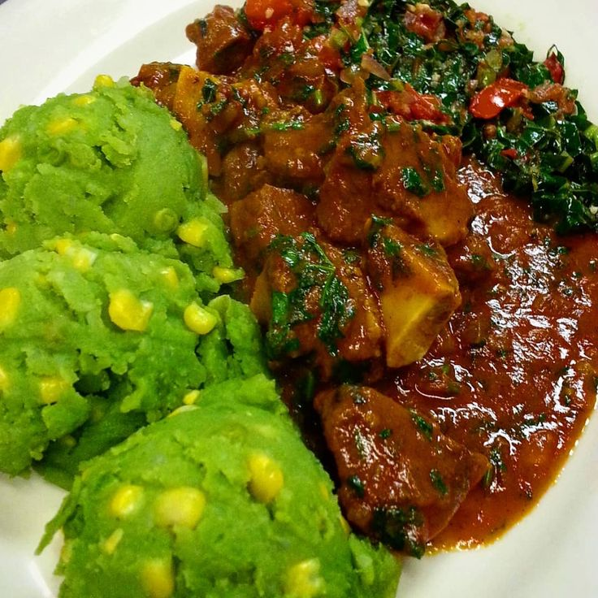

Easy, fast, delicious & comfort food that I enjoy
Today's recipes
Nyama choma,viazi & kachumbari

Meat: this recipe uses a wholso do.
Vegetables: fresh gingerchill(optional)..
Spices: cumin, paprika, and stock cubes..
Fruit: lemon juice (easily subst juice)..
Condiments: cooking oil and salt..
HOW TO MARINATE GOAT MEAT.
Meat with marinade on top in preparation for grilling.
Add the marinade.
Okay, I will admit that marinating goat meat mayskip,
but trust flavors.
I can tell you for certain that there is no looking bac y before cooking.
Mokimo & beaf stew
Meat: this recipe uses also do.
Vegetables: fresh ginger, gar chil(optional).
Spices: cumin, paprika, and stock cubes..
Fruit: lemon juice (easily substitutable with lime juice).
Condiments: cooking oil and salt.
HOW TO MARINATE GOAT MEAT.
Meat with marinade on top in preparation for grilling.
Add the marinade.
Okay, I will admit that marinating goat meat may sound like an extra skip,
but trust me on this one,. as this step willhance.
I can tell you for certain that there is no looking backefore cooking.